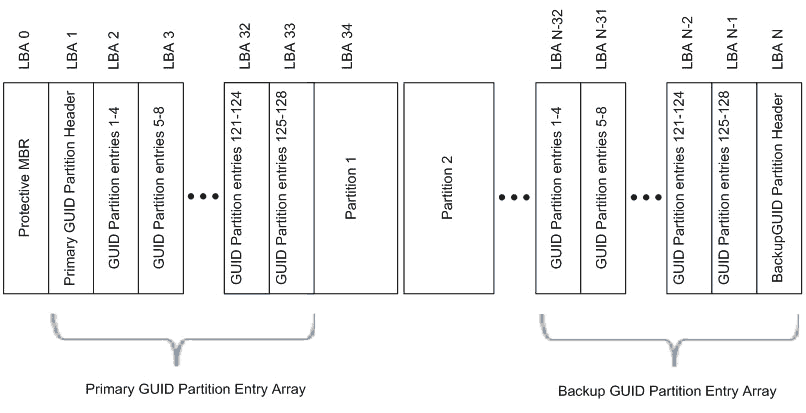

本文作者是一位开源理念的坚定支持者，所以本文虽然不是软件，但是遵照开源的精神发布。
本文作者十分愿意与他人分享劳动成果，如果你对我的其他翻译作品或者技术文章有兴趣，可以在如下位置查看现有的作品集：
由于作者水平有限，因此不能保证作品内容准确无误。如果你发现了作品中的错误(哪怕是错别字也好)，请来信指出，任何提高作品质量的建议我都将虚心接纳。
保护MBR包含一个DOS分区表(LBA0)，只包含一个类型值为0xEE的分区项，在小于2TB的磁盘上，大小为整个磁盘；在更大的磁盘上，它的大小固定为2TB。它的作用是阻止不能识别GPT分区的磁盘工具试图对其进行格式化等操作，所以该扇区被称为“保护MBR”。实际上，EFI根本不使用这个分区表。
EFI部分又可以分为4个区域：EFI信息区(GPT头)、分区表、GPT分区、备份区域。
EFI信息区位于磁盘的1号扇区(LBA1)，也称为GPT头。其具体结构如下表所示
| 相对字节偏移量 (十六进制) | 字节数 | 说明[整数皆以little endian方式表示] |
|---|---|---|
| 00～07 | 8 | GPT头签名“45 46 49 20 50 41 52 54”(ASCII码为“EFI PART”) |
| 08～0B | 4 | 版本号，目前是1.0版，其值是“00 00 01 00” |
| 0C～0F | 4 | GPT头的大小(字节数)，通常为“5C 00 00 00”(0x5C)，也就是92字节。 |
| 10～13 | 4 | GPT头CRC校验和(计算时把这个字段本身看做零值) |
| 14～17 | 4 | 保留，必须为“00 00 00 00” |
| 18～1F | 8 | EFI信息区(GPT头)的起始扇区号，通常为“01 00 00 00 00 00 00 00”，也就是LBA1。 |
| 20～27 | 8 | EFI信息区(GPT头)备份位置的扇区号，也就是EFI区域结束扇区号。通常是整个磁盘最末一个扇区。 |
| 28～2F | 8 | GPT分区区域的起始扇区号，通常为“22 00 00 00 00 00 00 00”(0x22)，也即是LBA34。 |
| 30～37 | 8 | GPT分区区域的结束扇区号，通常是倒数第34扇区。 |
| 38～47 | 16 | 磁盘GUID(全球唯一标识符,与UUID是同义词) |
| 48～4F | 8 | 分区表起始扇区号，通常为“02 00 00 00 00 00 00 00”(0x02)，也就是LBA2。 |
| 50～53 | 4 | 分区表总项数，通常限定为“80 00 00 00”(0x80)，也就是128个。 |
| 54～57 | 4 | 每个分区表项占用字节数，通常限定为“80 00 00 00”(0x80)，也就是128字节。 |
| 58～5B | 4 | 分区表CRC校验和 |
| 5C～* | * | 保留，通常是全零填充 |
| 相对字节偏移量 (十六进制) | 字节数 | 说明[整数皆以little endian方式表示] |
|---|---|---|
| 00～0F | 16 | 用GUID表示的分区类型 |
| 10～1F | 16 | 用GUID表示的分区唯一标示符 |
| 20～27 | 8 | 该分区的起始扇区，用LBA值表示。 |
| 28～2F | 8 | 该分区的结束扇区(包含)，用LBA值表示，通常是奇数。 |
| 30～37 | 8 | 该分区的属性标志 |
| 38～7F | 72 | UTF-16LE编码的人类可读的分区名称，最大32个字符。 |
注意，扇区尺寸不能假定为512字节，也就是说，一个扇区内可能存放4个以上的分区项，也可能只存放一个分区项的一部分。也就是说，除了头两个扇区(LBA 0 和 LBA 1)之外，GPT规范仅定义了数据结构的尺寸，而不关心使用多少个扇区进行存储。
| 相关操作系统 | GUID[little endian] | 含义 |
|---|---|---|
| None | 00000000-0000-0000-0000-000000000000 | 未使用 |
| None | 024DEE41-33E7-11D3-9D69-0008C781F39F | MBR分区表 |
| None | C12A7328-F81F-11D2-BA4B-00A0C93EC93B | EFI系统分区[EFI System partition (ESP)] |
| None | 21686148-6449-6E6F-744E-656564454649 | BIOS引导分区，其对应的ASCII字符串是"Hah!IdontNeedEFI"。 |
| None | D3BFE2DE-3DAF-11DF-BA40-E3A556D89593 | Intel Fast Flash (iFFS) partition (for Intel Rapid Start technology) |
| Windows | E3C9E316-0B5C-4DB8-817D-F92DF00215AE | 微软保留分区 |
| Windows | EBD0A0A2-B9E5-4433-87C0-68B6B72699C7 | 基本数据分区 |
| Windows | DE94BBA4-06D1-4D40-A16A-BFD50179D6AC | Windows恢复环境 |
| Linux | 0FC63DAF-8483-4772-8E79-3D69D8477DE4 | 数据分区。Linux曾经使用和Windows基本数据分区相同的GUID。 这个新的GUID是由 GPT fdisk 和 GNU Parted 开发者根据Linux传统的"8300"分区代码发明的。 |
| Linux | 44479540-F297-41B2-9AF7-D131D5F0458A | x86根分区 (/) 这是systemd的发明，可用于无fstab时的自动挂载 |
| Linux | 4F68BCE3-E8CD-4DB1-96E7-FBCAF984B709 | x86-64根分区 (/) 这是systemd的发明，可用于无fstab时的自动挂载 |
| Linux | 3B8F8425-20E0-4F3B-907F-1A25A76F98E8 | Server Data (/srv) 这是systemd的发明，可用于无fstab时的自动挂载 |
| Linux | 933AC7E1-2EB4-4F13-B844-0E14E2AEF915 | HOME分区 (/home) 这是systemd的发明，可用于无fstab时的自动挂载 |
| Linux | 0657FD6D-A4AB-43C4-84E5-0933C84B4F4F | 交换分区(swap) 不是systemd的发明，但同样可用于无fstab时的自动挂载 |
| Linux | A19D880F-05FC-4D3B-A006-743F0F84911E | RAID分区 |
| Linux | E6D6D379-F507-44C2-A23C-238F2A3DF928 | 逻辑卷管理器(LVM)分区 |
| Linux | 8DA63339-0007-60C0-C436-083AC8230908 | 保留 |
Microsoft还进一步对分区的属性进行了细分：低位4字节表示与分区类型无关的属性，高位4字节表示与分区类型有关的属性。Microsoft目前使用了下列属性：
| Bit | 解释 |
|---|---|
| 0 | 系统分区(磁盘分区工具必须将此分区保持原样，不得做任何修改) |
| 1 | EFI隐藏分区(EFI不可见分区) |
| 2 | 传统的BIOS的可引导分区标志 |
| 60 | 只读 |
| 62 | 隐藏 |
| 63 | 不自动挂载，也就是不自动分配盘符 |